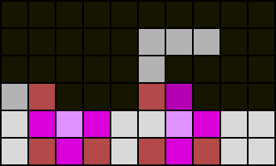
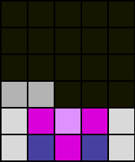
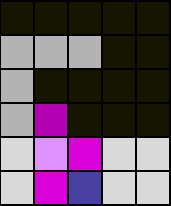
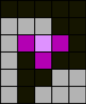
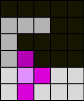
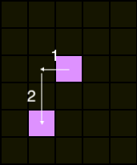

This section introduces terms that are fundamental to the block stacker game Tetris itself.
[Noun, plural: Boards]
The matrix/grid which constitutes the playing field. A board's dimensions are represented as {w}x{h}, where w is the width and h is the height. By the Tetris guideline standard, a typical board has dimensions 10x40.
[Noun, plural: Cells (Minos)]
An individual unit of the board. Can only be in one of two mutually exclusive states: filled or empty.
[Noun, plural: Perfect Empty Cells]
An empty mino that has no other empty minos in its row.
[Noun, plural: {term}-shapes]
A set of minos that form the shape of {term}.
[Noun, alt: Line Clear, plural: Clears (Line Clears)]
A fully filled row of minos in a board, causing the row to empty. All minos above the emptied row shifts down by one row.
[Verb, past tense: cleared | present continuous: clearing | present perfect: cleared]
The action of causing a row to be a clear, that is, to place pieces in a way that fills entire rows.
[Noun, plural: Columns (abbr. Cols)]
The set of minos included by a specific vertical lane of the board. Columns are numbered from 1 to 10, from left to right. The leftmost column is number 1.
[Noun, plural: Holes]
An empty mino with a filled mino above it in the same column.
An empty mino below the surface.
[Noun, plural: Accessible Holes]
A hole is an accessible hole if it is any-piece reachable hole.
[Noun, plural: Inaccessible Holes]
A hole is an inaccessible hole if it is all-piece unreachable hole.
[Noun, plural: Kicktables (Kick tables)]
A kicktable is a list of coordinate transformations that are applied to the active piece upon rotating. A single coordinate transformation itself is called a 'kick'. A typical implementation of a kicktable is to loop through all kicks linearly and apply them to the active piece, until one of them results in a non-obstructed pice. If none are successful, then the rotation is aborted.
[Noun, plural: overhangs]
A filled mino directly above, and within the same column as an accessible hole.
[Noun, plural: Pieces]
A set of four filled, homogeneous minos, in which each mino is adjacent to at least one other mino. They are also the objects the player controls and can place in Tetris games.
Image by Fel
[Adj., usage: {piece}-reachable mino, boolean]
A mino is {piece}-reachable if the mino can be filled by an active piece of type {piece}. The definition is dependent on the implied rotation system and kicktable.
[Adj., usage: {piece}-unreachable mino, boolean]
A mino is {piece}-unreachable if the mino cannot be filled by an active piece of type {piece}. The definition is dependent on the implied rotation system and kicktable.
[Noun, plural: Rotation Systems]
The system in which each active piece undergoes rotation. A rotation system may define a kicktable.
There are many rotation systems:
[Noun, plural: Rows (Lines)]
The set of minos within a specific horizontal lane of the board. Rows are numbered from 1 to 20, from bottom to top. The bottom row is number 1.
[Noun, alt: Boardstate, plural: Stacks (Boardstates)]
The set of filled minos within the board, taking into account their respective positions.
[Verb, past tense: stacked | present continuous: stacking | present perfect: stacked]
The action of creating a stack, that is, to place pieces onto the board.
[Noun, plural: Surface]
The set which contains the highest filled mino of each column of the board.
[Adj., usage: surface cell/mino]
A mino that is part of the surface minos set.
[Noun, plural: T-Spins (Tspins)]
A line clear using a T piece where the last action was a rotation, and satisfy the following:
Fig 1.1: Both T pieces have been spun into place, and the red minos are filled, satisfying the first condition.
Fig 1.2: This Tspin in particular has 2 of its 'inner' corners filled, satisfying the second condition.
Fig 1.3: This Tspin does not satisfy the 2 corner rule, but see Fig 1.4.
  
Fig 1.4: Before and after rotation.
Despite this Tspin failing the 2 corner rule, the last rotation executed kicked the piece 1 left and 2 down.
This kick is dubbed "kick five", and this validates this spin as a Tspin by the kick 5 rule.
Such a Tspin is dubbed a "Fin". (E.g., Fin TSS, Fin TSD).
Please note that Fins are exclusive to the SRS and related family of kicktables, as such a 'kick five' may not exist in other systems.
The amount of lines cleared may be appended for additional detail:
[Noun, plural: Tspin slots]
An empty T-reachable T-shape that can result in a Tspin if filled by a T.
[Noun, plural: well minos]
A perfect empty mino that is directly above the lowest surface mino or another well mino. All well minos (well) will be within the same column of a given board state.
[Noun, plural: Wells]
The set that includes all well minos in a given board. A board either has one well or no well at all.
A well may be denoted by:
For example: Column 7 well is the same as saying 6-3. In cases where X is smaller than Y, the {Y}-{X} naming may be used. However, to avoid ambiguity, it is best to use {X}-{Y} naming. (E.g., 7-2 may be used to refer to the 2-7 well)